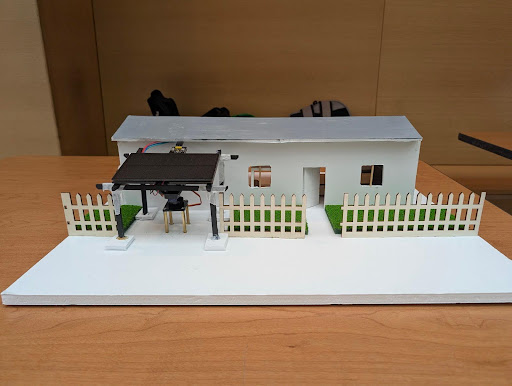
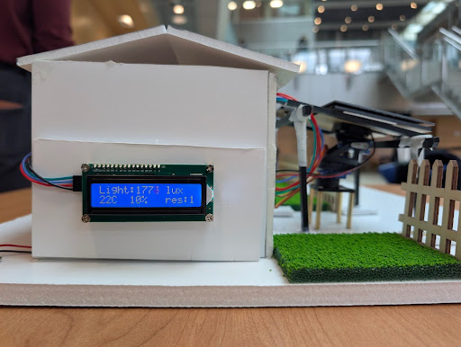

Electrical Engineering Candidate
Intuitive systems.
Sustainable impact.
Fourth-year student at UBC Okanagan specializing in off-grid power and embedded control logic.
Professional Bio
I am a final-year Electrical Engineering student at the University of British Columbia Okanagan with a deep interest in renewable energy and smart-grid technology. My academic journey is defined by a commitment to technical rigor and social equity, applying complex theoretical frameworks to real-world infrastructure challenges.
During my Capstone project, I led the physical prototyping phase, where I designed and coded a functional scale model using Arduino to demonstrate solar charging and environmental sensing for a community in Cuba.
Personal Interests & Character
At my core, I am a builder. I have always loved tinkering with electronics, a curiosity that evolved from exploring gadgets to designing sophisticated solar microgrids. This hands-on motivation is what drives my character as an engineer—I don't just want to understand how a system works on paper; I want to build it and test it to ensure its real-world impact.

